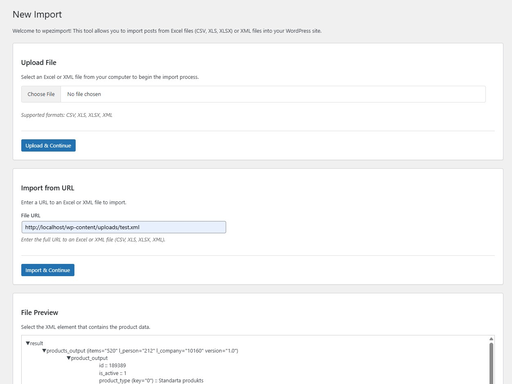
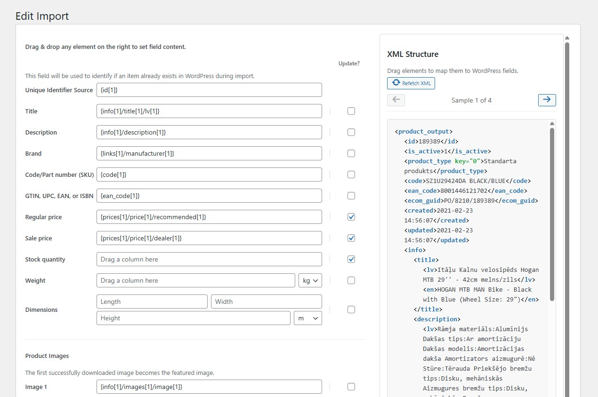
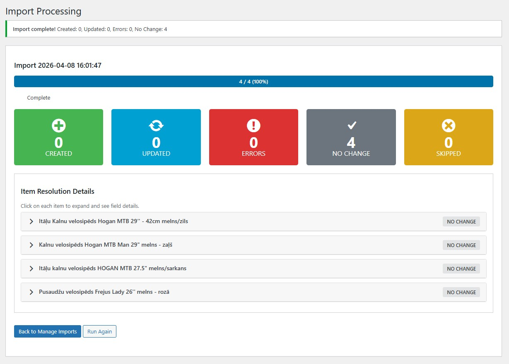
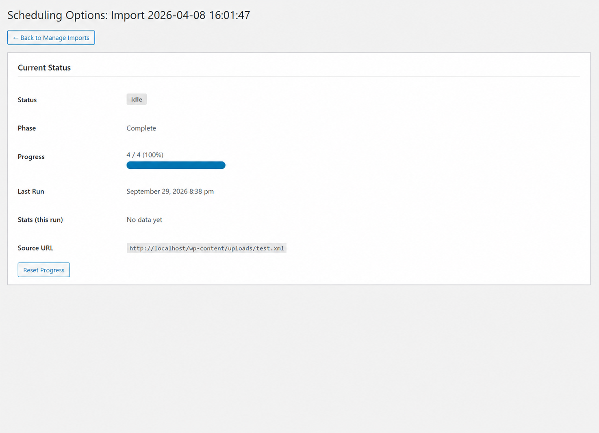

wpezimport turns Excel, CSV and XML feeds into WooCommerce products — with drag-and-drop field mapping, automatic image importing and hands-free scheduled updates.
Requires WordPress + WooCommerce · PHP 8.1+
Built for real-world supplier feeds — messy XML, big catalogs, recurring updates.
Drag file columns or XML elements onto WooCommerce fields. No code, no config files — the mapping screen shows real data while you work.
Pick the repeating item element from a visual XML tree, browse real product samples, and build values with XPath patterns like {price}/@{currency}.
Title, description, brand, SKU, GTIN/EAN, regular & sale price, stock, weight, dimensions, categories and product images — all covered.
A unique identifier matches feed items to existing products. Per-field “Update?” toggles let you refresh only what changed — e.g. just price and stock.
Download up to 4 images per product. The first becomes the featured image; the rest go to the gallery. Downloaded images are deduplicated across runs.
Cron-ready trigger, process and cancel URLs with a secret key. Change detection via ETag / Last-Modified / content hash — re-imports only when the feed actually changed.
Large catalogs import in resumable batches sized to your server’s time limit. Posts first, images second — progress is never lost.
Save import configurations, re-run or edit them any time, and review per-run history: created, updated and error counts for every import.
Upload a CSV, XLS, XLSX or XML file — or paste a URL to a remote feed. wpezimport previews the file before anything is imported.
For XML feeds, choose the repeating element that represents one product using the interactive tree. For spreadsheets, columns are detected automatically.
Drag columns or XML elements onto product fields. Set a unique identifier, choose which fields to update on re-import, pick units and defaults.
Run the import immediately with live progress, or save it and wire the cron URLs into your server’s crontab for automatic recurring updates.
The whole workflow happens in a clean admin UI inside wp-admin.




URL-based imports can run themselves. Point your server’s crontab at three URLs — wpezimport does the rest.
0 2 * * * wget -q -O /dev/null "https://yoursite.com/?wpezimport_action=trigger&import_id=1&import_key=…"
Runs once a day. Downloads the feed and checks whether it changed (ETag, Last-Modified, content hash). If it did, the import restarts from scratch — otherwise nothing happens.
*/2 * * * * wget -q -O /dev/null "https://yoursite.com/?wpezimport_action=process&import_id=1&import_key=…"
Runs every couple of minutes. Each call processes as many items as fits in the time limit, then stops — resuming exactly where it left off on the next call.
wget -q -O /dev/null "https://yoursite.com/?wpezimport_action=cancel&import_id=1&import_key=…"
Stops a running import at any time. Progress is preserved, so the next trigger continues instead of starting over.
wpezimport folder into wp-content/plugins/.composer installTip: keep the plugin folder name as wpezimport — that’s the slug WordPress will use.